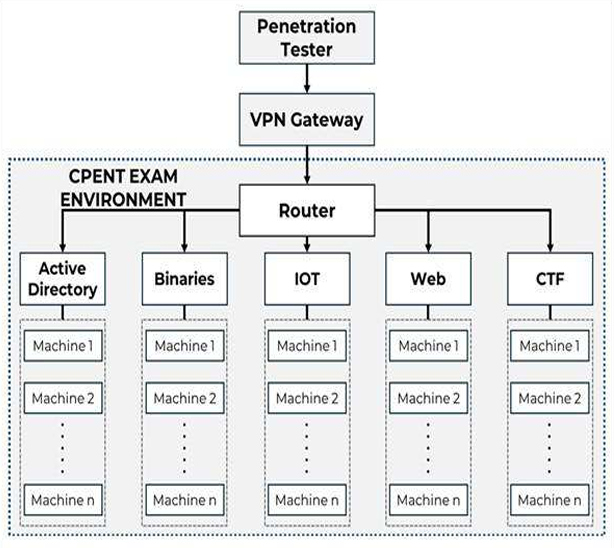

What Is CPENT?
The Certified Penetration Testing Professional (CPENT) is an advanced, hands-on certification offered by EC-Council. It focuses on preparing penetration testers to assess complex enterprise environments by identifying vulnerabilities, exploiting systems, bypassing security controls, and evaluating network defenses.
Rather than limiting the assessment to traditional network targets, CPENT combines Active Directory, web applications, IoT and operational technology, custom exploit development, binary exploitation, network pivoting, and restricted network segments. The emphasis is on adapting a practical methodology to difficult, multi-layered environments.
CPENT: Certified Penetration Testing Professional
Provider: EC-Council
Assessment: Practical, performance-based penetration test
Focus: Enterprise environments, exploitation, pivoting, and reportingCertification Snapshot
I earned the CPENT certification after completing the practical assessment and submitting the required penetration testing report.

Candidate: Mohamed Yassine Bougamra
Certification: Certified Penetration Testing Professional (CPENT)
Provider: EC-Council
Issued: September 15, 2026
Certificate Number: ECC3985210476
Status: CertifiedExam Overview
CPENT is a 24-hour practical, performance-based assessment delivered online with remote proctoring. Candidates can complete it as one continuous 24-hour session or split it into two separate 12-hour sessions.
The examination environment is multi-layered and objectives are completed through practical technical work. Success depends not only on finding vulnerabilities, but also on validating exploitation, reaching the required objectives, preserving evidence, and producing a clear penetration testing report.
Activation and Reporting Timeline
- Voucher redemption: Candidates generally have one year from receiving the voucher to redeem and activate it through the Aspen Portal.
- Dashboard activation: After voucher activation, an additional one-year period is generally available to activate the CPENT Exam Dashboard.
- Examination window: Once the dashboard is activated, candidates have 30 days to complete the examination and submit the report.
- Report submission: The penetration testing report must be submitted within seven calendar days after completing the examination.
- Evaluation: The exam team generally takes up to seven business days to review the submitted report and communicate the result.
These timelines should be confirmed against the current EC-Council examination policy because certification procedures can change.
Checking the Result
After submitting the report, monitor the examination status through the Aspen Portal. In my experience, I did not receive an email confirming the result; I discovered that I had passed by checking the portal directly. I recommend checking the portal regularly instead of relying only on email notifications.
My Score
My CPENT result was 2,060 out of 2,500 points, or 82.4%. The passing score shown in the exam status was 1,750 points, equivalent to 70%.

Total Score: 2500
Passing Score: 1750 (70%)
Your Score: 2060 (82.4%)
Final Status: CPENT certified professionalCPENT uses cumulative scoring based on the objectives completed during the examination, the technical quality of the work, and the completeness of the report. The passing threshold is generally around 70%, although candidates should verify the applicable requirement for their exam version.
Certification Levels
- CPENT: Awarded to candidates who reach the required passing score below 90%.
- Licensed Penetration Tester (LPT) Master: Awarded to candidates who achieve 90% or higher.
Technical Requirements
A reliable technical setup is important for a 24-hour assessment. The expected environment includes:
- A computer capable of running a penetration testing virtual machine smoothly.
- A Linux penetration testing distribution such as Kali Linux or Parrot Security OS.
- A compatible VPN client, such as OpenVPN Connect, for access to the examination environment.
- A stable internet connection throughout the assessment.
- A webcam for remote proctoring.
Important: Only one screen or monitor is permitted during the examination. Confirm the latest technical and proctoring requirements before the scheduled session.
Exploring the CPENT Exam Playground
The CPENT playground combines multiple network zones, each with different technologies, attack surfaces, and objectives. The following diagram summarizes the environment at a high level.

Active Directory
This zone simulates an enterprise Active Directory forest. The objective is to identify the Domain Controller and assess the domain environment through enumeration, privilege escalation, and lateral movement.
Direct access to the Domain Controller is not always available. Candidates may need to compromise an intermediate system and use network pivoting to reach restricted parts of the forest. A strong understanding of domain enumeration, trust relationships, and Windows attack paths is valuable here.
Binary Exploitation
The Binaries zone focuses on identifying filtering mechanisms, mapping the attack surface, and reaching systems behind restricted network segments. After access is obtained, candidates may need to analyze and reverse engineer executables, answer questions, or develop a custom exploit to obtain elevated privileges.
Security mechanisms such as stack canaries, NX, and PIE can make binary analysis and exploitation an important part of the challenge.
Internet of Things (IoT)
This zone evaluates the assessment of IoT devices and their underlying firmware. Work may involve identifying the target, mapping its attack surface, extracting a firmware filesystem, reviewing application code, and investigating weaknesses such as hard-coded credentials.
Familiarity with firmware extraction, static analysis, embedded systems, and common IoT vulnerabilities is useful. Depending on the target, candidates may encounter application code written in languages such as PHP.
Web Applications
The Web zone focuses on identifying and exploiting application vulnerabilities and security misconfigurations. Candidates investigate exposed services, understand application behavior, validate weaknesses, and use successful access to investigate compromised assets and locate the required evidence.
Capture the Flag (CTF)
The CTF zone combines Linux systems, web applications, and hosts containing different weaknesses. Objectives can require initial access, privilege escalation, internal reconnaissance, and network pivoting through isolated segments to reach additional targets and locate flags or secret keys.
Tips During the Assessment
- Capture screenshots throughout the examination. Record discoveries, exploitation steps, relevant configurations, and proof of access. Do not rely on memory after many hours in the environment.
- Maintain detailed technical notes. Document commands, tools, techniques, credentials, findings, and systems assessed. Organize notes by zone or target.
- Practice in advance. Official CPENT practice labs can help reinforce the methodology, expose knowledge gaps, and build familiarity with the assessment style.
- Master network pivoting. SSH tunneling, port forwarding, proxychains, and related techniques are useful in segmented enterprise environments.
- Handle technical issues efficiently. Contact support promptly when the platform has problems rather than losing assessment time on infrastructure issues outside your control.
- Manage time strategically. Prioritize objectives, record partial findings, and return to difficult challenges later with a fresh perspective.
- Understand the resource policy. CPENT is open-book, but candidates should verify the current rules for internet access, external references, and AI-assisted tools before starting.
Writing the Penetration Testing Report
The report is an essential part of the assessment. Technical achievements should be supported by clear evidence and structured so that both technical and non-technical readers understand the risk.
- Use a clear structure: executive summary, scope, methodology, findings, evidence, impact, and remediation.
- Write for more than one audience: explain the business significance without removing the technical detail needed for validation.
- Document every finding: identify the affected asset, explain discovery and exploitation, and summarize the result.
- Support findings with evidence: include readable screenshots, command output, and relevant artifacts.
- Explain impact: describe possible unauthorized access, privilege escalation, information exposure, or compromise of additional systems.
- Give actionable remediation: recommend specific configuration changes, updates, access restrictions, or monitoring improvements.
- Apply a consistent format: use the same title, asset, severity, description, evidence, impact, and remediation structure for each finding.
- Review before submission: check for missing findings, unclear explanations, unreadable screenshots, inconsistent severity ratings, and incomplete remediation advice.
Start organizing the report and evidence during the assessment rather than leaving all documentation until the end. This makes the final review more manageable and reduces the risk of overlooking important details.
Recommended Practice Labs
Candidates without access to the official practice labs can supplement their preparation with resources covering Active Directory, IoT, Linux privilege escalation, binary exploitation, firmware analysis, and pivoting:
- Hacking Active Directory
- IoT Intro
- OverlayFS
- Wreath
- 0day
- Pwn101
- R-Firmware
- Intro to Pwntools
- Ret2libc
- Linux Privilege Escalation
- Linux PrivEsc
- Dirty Pipe
Final Thoughts
CPENT is a demanding practical certification that rewards methodical reconnaissance, adaptability, careful evidence collection, and clear reporting. Its combination of Active Directory, binary exploitation, IoT, web applications, CTF-style objectives, and pivoting makes it a broad test of real-world penetration testing skills.
My final score was 82.4%, above the 70% passing requirement. The most important lesson was that technical execution and reporting discipline are equally important: every successful access should be validated, documented, and connected to a clear security impact.